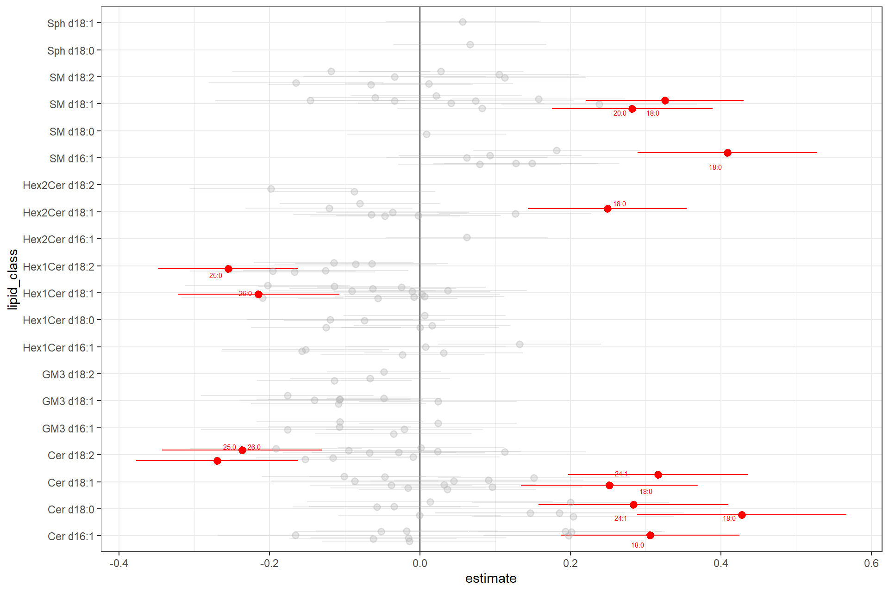

6 Multivariate Regression
6.1 Libraries
library(here)
library(tidyverse)
library(SLINGtools)
library(broom)6.2 Import Datasets
d_meta <- read_csv(here("data/ISLS10_Part2_metadata.csv"))
d_wide <- read_csv(here("data/ISLS10_Part2_lipidomics_curated.csv"))6.3 Prepare Data
# Convert to long format
d_long <- d_wide |>
pivot_longer(cols = -ID, names_to = "Compound" , values_to = "Conc")
# Combine data and metadata
d_full <- d_meta |> left_join(d_long, by = "ID")
# log-transform and scale (z-score) data
d_full <- d_full |>
group_by(Compound) |>
mutate(Conc_log = log2(Conc),
Conc_logz = as.numeric(scale(Conc_log)))6.4 Run regression for each lipid
In this example a logistic regression is used. The output of glm() is converted to a tidy table using the broom::tidy() function.
model <- as.formula("DM ~ Age + Gender + BMI + HbA1c +
SBP + HDL + LDL + TG + Conc_logz")
d_res <- d_full %>%
group_by(Compound) %>%
nest() %>%
mutate(
models = map(data, function(x) glm(model, data = x, family = "binomial")),
tidy = map(models, function(x) broom::tidy(x))) |>
unnest(tidy) |>
dplyr::select(-data, -models)The results contain the combined estimates, errors, and P values for each term for each lipid species.
| Compound | term | estimate | std.error | statistic | p.value |
|---|---|---|---|---|---|
| Cer d16:1/16:0 | (Intercept) | -20.955219 | 1.886056 | -11.110601 | 0.000000 |
| Cer d16:1/16:0 | Age | 0.032885 | 0.010896 | 3.017987 | 0.002545 |
| Cer d16:1/16:0 | Gender | 0.593323 | 0.217179 | 2.731950 | 0.006296 |
| Cer d16:1/16:0 | BMI | 0.129663 | 0.027600 | 4.698024 | 0.000003 |
| Cer d16:1/16:0 | HbA1c | 2.041818 | 0.281859 | 7.244102 | 0.000000 |
| Cer d16:1/16:0 | SBP | 0.017569 | 0.005370 | 3.271562 | 0.001070 |
| Cer d16:1/16:0 | HDL | -0.725890 | 0.368385 | -1.970465 | 0.048785 |
| Cer d16:1/16:0 | LDL | -0.247450 | 0.128041 | -1.932579 | 0.053288 |
| Cer d16:1/16:0 | TG | 0.402731 | 0.142030 | 2.835530 | 0.004575 |
| Cer d16:1/16:0 | Conc_logz | 0.197851 | 0.113746 | 1.739413 | 0.081962 |
To get the effects and P values for the lipids we filter for the term Conc_logz. We futhermore get the adjusted P values (FDR).
d_res_lipids <- d_res |>
filter(term == "Conc_logz") |>
mutate(FDR = p.adjust(p.value, method = "fdr")) |>
arrange(FDR)| Compound | term | estimate | std.error | statistic | p.value | FDR |
|---|---|---|---|---|---|---|
| SM d16:1/18:0 | Conc_logz | 0.408832 | 0.119650 | 3.416896 | 0.000633 | 0.000633 |
| SM d18:1/18:0 | Conc_logz | 0.325500 | 0.105045 | 3.098661 | 0.001944 | 0.001944 |
| Cer d18:0/18:0 | Conc_logz | 0.427791 | 0.139298 | 3.071052 | 0.002133 | 0.002133 |
| Hex1Cer d18:2/25:0 | Conc_logz | -0.255110 | 0.092979 | -2.743742 | 0.006074 | 0.006074 |
| Cer d18:1/18:0 | Conc_logz | 0.316480 | 0.119278 | 2.653288 | 0.007971 | 0.007971 |
| SM d18:1/20:0 | Conc_logz | 0.282201 | 0.106676 | 2.645399 | 0.008159 | 0.008159 |
6.5 Forest Plot
Prepare data for the plot: get lipid class from lipid names, join it to the data frame, calculate FDR, get upper/lower errors, and set “significant specie”
# lipid annotation
d_lipid_annot <- d_res_lipids |>
select(Compound) |>
separate(Compound,
into = c("lipid_class", "fa_chain"),
remove = FALSE,
extra = "drop",
fill = "right",
sep = "/" )
d_plot <- d_res_lipids |>
full_join(d_lipid_annot, by = "Compound") |>
mutate(
est_low = estimate - std.error,
est_high = estimate + std.error,
signif = FDR < 0.05,
label = if_else(signif, fa_chain, "")) |>
arrange(signif)Plot estimates of all lipid species, grouped by lipid class, highlighting significant species in red and label them by the FA chain.
ggplot(d_plot, aes(x = lipid_class, y = estimate,color = signif, label = label)) +
geom_hline(yintercept = 0) +
geom_pointrange(aes(ymin = est_low, ymax = est_high, alpha = signif),
size = 0.5,
position = position_jitter(width = .3, height = 0)) +
coord_flip() +
scale_color_manual(values = c("FALSE" = "grey70", "TRUE" = "red")) +
scale_alpha_manual(values = c("FALSE" = 0.3, "TRUE" = 1)) +
ggrepel::geom_text_repel(
aes(y = estimate),
size = 2,
max.overlaps = 5,
point.padding = .7
) +
theme_bw() +
theme(legend.position="none")